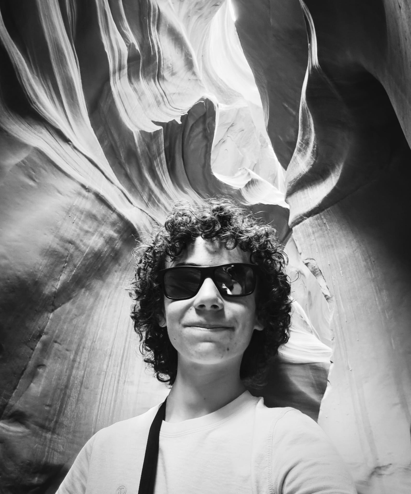

About
Student & Maker
I'm Sem Acou, and I build innovative engineering projects. From robots to rockets and flight computers, everything that interests me is getting chased.
I'm currently a student in my last year of highschool. In my free time i like to build these projects to keep learning about concepts I grew curious about and to see how far my engineering ability stretches.
My dream is to one day work at an aerospace company! I know it will be a bit challenge, but honestly, I'm up for it!
Join me as we embark on this exciting adventure through the world of engineering, where knowledge knows no bounds and curiosity fuels our quest for understanding.
"Things usually work out best for those who make the best of how things work out" - John Wooden
Current Focus
Rocketry
Developing avionics and launch systems.
Robotics
Mechanical design and embedded control.
Flight Computers
Firmware and telemetry systems.
Electronics
PCB design, sensors and power systems.